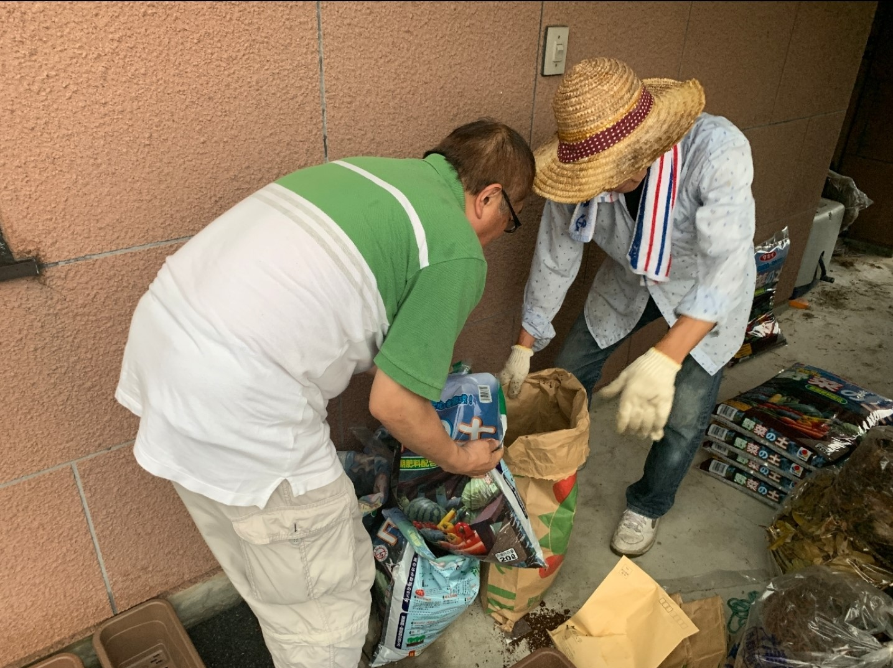
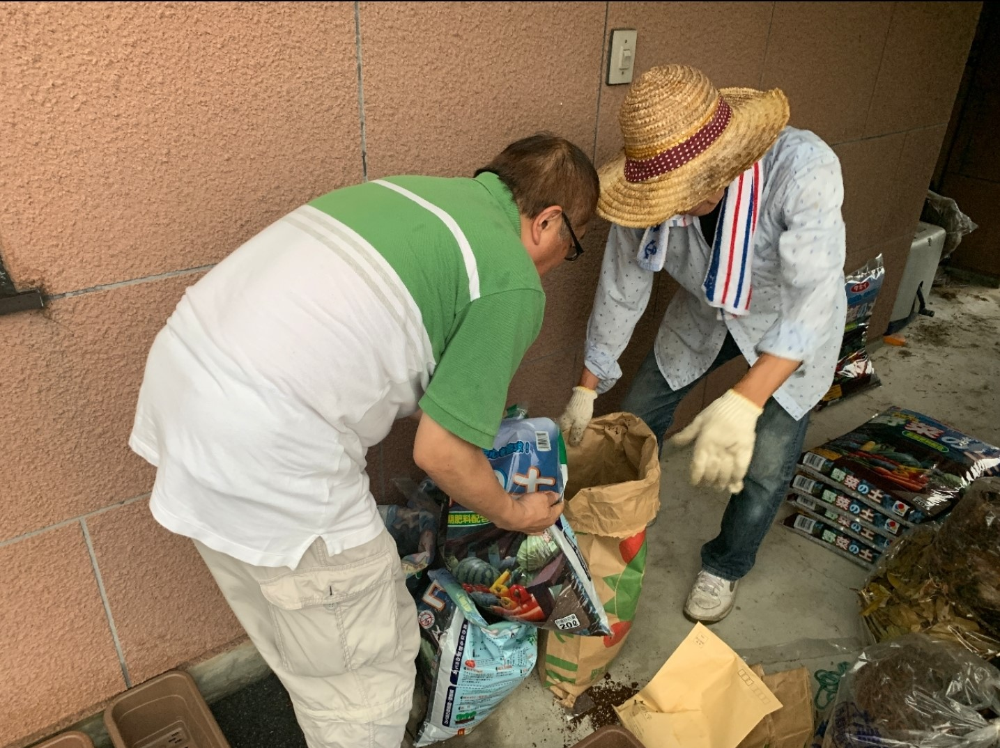

仰木の里まちづくりプロジェクト
https://youtu.be/-6xHVwuXn_ISDGs って知っていますか？
滋賀県大津市仰木の里では、少子高齢化に伴った過疎化が問題となっています。
その問題に積極的に取り組んでいるのが、龍谷大学まちづくりＬＡＢ「ＦＡＮ」です。
2018 年から始まり、龍谷大学と大津市役所と市民が連携した正式な官学民事業です。
学生団体「ＦＡＮ」を通じて、SDGsを更に知ってほしいと思い、制作しました。
作品時間：7 分 42 秒 制作期間：3ヶ月
撮影機材：一眼レフ 8Xi キーワード SDGs ×ドキュメンタリー


出演者
FAN のプロジェクトリーダー藤本俊介さんと、FAN と協力し共に政策を取り組んでいる
大津市役所 市職員の方に詳しいお話を伺いました。
FAN の主なプロジェクトの一つは家庭菜園で、年齢問わず様々な人が携わり、
地域との関係を築いています。
「野菜を育てるだけじゃなくて、野菜を育てる過程の中で
住民の会話が生まれることが一番の目的です」と
プロジェクトリーダーの藤本俊介さんは語っています。
SDGsとは
SDGs とは「Sustainable Development Goals（持続可能な開発目標）」の略称です。
「17 の目標」と「169 のターゲット（具体目標）」で構成されており、
2015 年 9 月の国連サミットで採択されたもので、
国連加盟 193 か国が 2016 年から 2030 年の 15 年間で
達成するために掲げた国際社会共通の目標です。
このサミットでは、2015 年から 2030 年までの長期的な開発の指針として、
「持続可能な開発のための 2030 アジェンダ」が採択されました。
この文書の中核を成す「持続可能な開発目標」を SDGs と呼んでいます。
今回の映像は 17 の目標の中でも、
11 番「住み続けられるまちづくりを」がメインとなっています。
 
